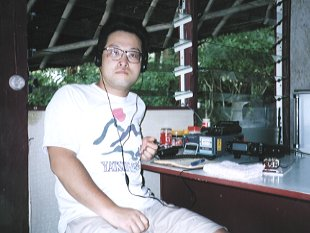
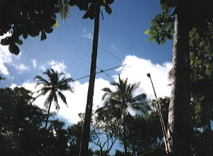
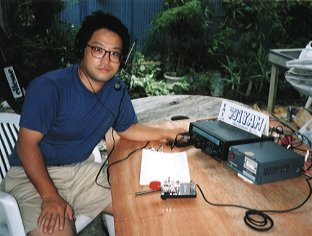

Chichijima Ogasawara Is
【Back Issues Apr.99】
30.Apr.99
(10:00-d) VK-TV 03:00- 46.172/240 -- Weak VK8RAS 05:20- 50.047 CW Beacon 9M-TV 06:00- 48.240/260 -- VK6HK 07:15 50.110 CW VK4JH 08:03 50.110 CW VK4RIK 09:20- 52.445 CW Beacon ◎ 4月25日以降、6mのコンデションは急激に落ち込んでしまったが、これで国内のEsが発生しだすと春の DXシーズンも終わりとなる。 今のところまだ強力なEsの発生は無いが、VKと近場以外のDXの入感は期待薄？ DXの入感予想も5月以降は"星一つ(*)"減！。
|
29.Apr.99
(14:00-b) VK-TV 07:50- 46.172 -- ◎ 4月16日からH44OO(Solomon Is)、18日からH40OO(Temotu Is)を運用、Temotu Isでは貴重な6mのNew をサービスしてくれたJK7TKE(JJ1QXG)・福井さんが今日の午後、帰国した。 Narita(JA)→Fiji(3D2)→Solomon(H44)→Temotu(H40)→Pigeon(H40)と目的地まで、片道5日間の道の りは観光旅行の比ではない。 週に2、3便の航空路線と船を乗り継ぐため、"待ち時間"を取られてしまうた めだが、この移動だけでも大変なこと。 恐れられていたマラリア(Malaria)に感染(発病)すること無く元 気に帰国された福井さん「お疲れさま！」。[H4000写真集]


H40OOを運用する福井さん。 RIGはFT-100／椰子の木に括りつけた自作の3ele Yagi
28.Apr.99
(12:00-c) DU-TV? 06:00 48.250 -- 9M-TV 08:40- 48.240 -- BY-TV 08:40- 49.750 -- VK-TV 08:40- 46.172 -- VK4JH 08:40 50.110 SSB/CW CQ Okinawa VK4BRG 08:46- 50.077 CW Beacon VK4RIK 08:47- 52.445 CW Beacon VK8VF 08:49- 50.056 CW Beacon VK8KTC 09:00 50.110 SSB ◎ 日中は45/46/48MHz帯のTVも入感しない静かなコンデションだったが、08:30z頃からVKのBeaconが聞こえ だした。 沖縄に良く開いているMaldivesの8Q7QQとのQSOが、今日はF(France)からもリポートされている。27.Apr.99
(08:30-b) VK-TV 04:00- 46.240 -- Weak 9M-TV 08:00- 48.240/260 -- BY-TV 08:00- 49.750 -- WH7C/DU3 08:19 50.150 SSB Not /DU1 (08:24z F.OUT) ◎ 二日間DXらしい信号は何も聞こえない6mのコンデションだったが、今日は夕方から短時間、WH7C/DU3が入感 してきた。 例年、サンスポットの上昇期には5月の連休頃までDXの入感で賑わうので、このまま春のコンデションが終わっ てしまうとは思われないが、やはりこの急激な落ち込み方は、サイクル23が"本調子"でない証拠なのかも。26.Apr.99
(13:00-c) VK-TV 02:50- 46.172 -- Weak ◎ 日曜日のコンデションを今日もそのまま引きずって6mは静か。 ◎ Solomon(H44)に滞在中のH44OO・福井さんからの連絡では、昨日、今日とH44でもコンデションは悪く、 49.750MHzのバズも入感していないとのこと。 先週末以来、太平洋方面のコンデションは落ち込んでしま ったので、H40からの運用があと一週間遅れていたら"危ない"ところだった。 福井さんは明日(27日)の朝 にはH44を発ち、Fiji(3D2)経由で帰国する。 Fijiには二日間滞在するがQRVの予定はない。25.Apr.99
(09:00-b) ◎ 夕方まで45、46、48MHz帯のTVの信号も入感しない静かな日曜日。 ◎ 思いがけなくFBなオープンとなった3B9R以来、インド洋から中近東方面のパスに期待が高まっているが、 この春のコンデションではJA本土からのQSOは想像しているほど簡単ではない。 位置的に南側に下がる4S7、8Q7、VQ9なら西日本からでもQSOのチャンスはあるかも知れないが、東西のパス となる中近東方面のAP2、A61、5B4や、距離のあるS7などは、緯度の低い沖縄以外にパスは見込めそうにない。 "VK4並み"に毎日の様に入感するVQ9や、1エリアではカケラも聞こえない4S7、ノイズに埋もれそうな弱い9M2 などがRS59+で聞こえている沖縄のコンデションとの差を経験するにつけ、今更ながら6mの伝搬の"不思議"を 感じる。24.Apr.99
(09:00-d) XU7AAP 05:08 50.110/115 SSB 9M2JKL 07:18 50.107 CW VK4JH 08:38 50.110/115 CW ◎ JJ1QXG(JK7TKE)・福井さんはH40OOの運用を終え、24日午後Solomon(H44)に戻った。 福井さんは26日 までHoniaraからH44OOでQRVする予定。 尚、H40最終日の昨日はJAとのオープンが無かったとの事なので、 09:40z頃に1エリアでQSOした"H40OO"はパイレートと判明した。 ◎ 最近キプロス(Cyprus)からアクティブにQRVしている5B4AGN・Nickからの連絡によると、彼のコール サインは4月23日から5B4FLに変更になったとのこと。 Nickは英本国でもG3KOXでアクティブな"6mマン"。 6月中旬にG3SED、G4ICD(ex GJ4ICD)等と共にE4(Palestine)からの運用を予定している。 尚、現在5B4 から、Nickの他に5B4JE、5B4AFB、5B4AGM、5B4AGC等が6mにQRVしているとのこと。 ◎ 6mでのQRVが噂されていたパキスタン(Pakistan)のAP2WAP・SergioとのQSOが最近頻繁にリポートされ る様になった。 3月下旬にはZS6's、4月に入ってVQ9DXとのQSOなどがリポートされている。 沖縄なら今 のコンデションでも十分QSOの可能性はある。23.Apr.99
(13:00-g) 9M-TV 04:00 48.240/260 -- (H40OO 04:47 50.110 CW JA2 Report) ZL2TPY 05:29 50.110 CW VK4BLK 07:05 50.110 CW XU7AAP 07:31 50.110 SSB QSL via N2OO VK4JH 08:01 50.110 CW CQ EU!? VK4ABW 08:05 50.110 CW DU1GF 08:23 50.125 SSB *XU7AAP 08:30 50.115 SSB QSX 50.120MHz H40OO 09:40 50.110 CW (パイレート:See 4/24 Info) ◎ 今日のH40OOは09:40zに突然50.110MHzのCWで聞こえてきたが、1エリアを数局QSOした後"QSY UP 5" を指定したまま聞こえなくなってしまった。 04:47z頃にもJA2エリアで入感がリポートされていたが、 1エリアでは確認できなかった。 昼の時間帯は普段"停電"のためにQRV出来ないが、02:00頃に28MHz帯 に出ていたH40OO・福井さんの話しでは、今日は"サービスデー"？で日中も電気が使えるとの事だった ので、早い時間帯からQRVしていたものと思われる。(See 4/24 Info) ◎ H40OOからの連絡によると、昨日のオープンでQSOしたJAは161だった。 これで、3日間でJA'sとの 6mのQSO合計は647に増えた。 エンティティーも新たにHL5XFとのQSOで6となった。 Temotuでは英国系のお宅のゲストハウス(日本の民宿)に滞在しているため、夜の遅い時間帯(日本との 時差は2時間)のSSBの運用は迷惑となるので控えているとのこと。 昨夜もCWで運用中に執拗にSSBのリ クエストする局がいて、その都度"断り"のインフォメーションを流していたが、DX Peditionでは通常 では考えられない環境で運用している場合が多いので、相手の状況を考えない一方的なリクエストは 慎むべきだろう。 H40からJAのオープンの目安となったのは、HawaiiのKH6HMEとV73SIXのBeaconで、JAが入感する前に は必ず聞こえていたとのこと。 22日現在、VKとのQSOはまだVK8だけだが、運用出来る時間帯が変れば 他のエリアとのQSOの可能性があったものと思われる。 日中にQRV出来た4月19日02:42zにTahitiのFO5DRのBeaconを受信している。 H40OOの運用は今日で終了。 ○ H40OO/H44OOのQSLは下記のJK7TKE(JJ1QXG)のHome QTHまで。 〒 359-1112 埼玉県所沢市泉町1840-5 福井 浩司 ◇ H40OOのJAエリア別QSO数(4月22日現在) JA1: 217 JA6: 84 JA2: 154 JA7: 32 JA3: 65 JA8: 0 JA4: 40 JA9: 13 JA5: 20 JA0: 22 計 64722.Apr.99
(14:00-f) VK-TV 02:30- 46.172 -- ZL-TV 02:30- 45.250 -- Weak VK-TV 04:00- 46.172/240 -- VK2QF 04:39 50.110 CW VK4RGG 04:40- 50.058 CW Beacon VK4BRG 04:40- 50.077 CW Beacon VK4ABP 04:41- 52.346 CW Beacon VK8RAS 04:43- 50.047 CW Beacon VK2HO 04:44 50.120 SSB V73SIX 05:15- 50.014 CW Beacon V73AT 05:20 50.110 SSB 9M6CT 09:06 50.130 SSB VK4JH 09:21 50.110 CW H40OO 09:24 50.110 CW CQ Just open ! *H40OO 09:28 50.120 SSB/CW QSX 50.140 UP (XU7AAP 09:30- 50.115 SSB JA2- Open to Western Japan) *H40OO 10:36 50.110 CW/SSB Back Beam ◎ 今日のH40OOは、09:24zに50.110MHzのCWのCQの入感で始まった。 QSO開始と同時に50.120MHzにQSY、SSB/CWでパイルアップを捌いていた。 信号はオープン初日の19日 と同様に強力だったので、初日の大オープンを逃した局も、今日は楽にQSO出来たのでは？。 10:30z頃に一時VK2/4とのQSOを狙いアンテナを南に向けて50.110MHzでQRVしていたが、この状態でも JAに入感してくるFB？なコンデションだった。 停電前の11:10zにQRT。 ◎ Temotu からH40OOを運用中の福井さんから4月16日のH44OOと、4月17日からのH40OOの6mの運用結 果が報告された。 リポートによると、昨日(21日)までのH40OOの6mでの総QSO数は495(JA=486)、エ ンティティーはJA、KH7、V73、VK8、VR2の5となっている。 H40OOのファーストエバーは、既報の通り4月19日の朝にQSOしたVK8MS(4/18=23:56z)、初JAは07:36z にKH7とのQSOにブレークしてきたJA7WSZだった。 JAの各エリア別のQSO数は下記の通り。 尚、H40OOからの運用は4月23日までで、24日の早朝には島を離れ、午後にはH44(Solomon Is)に戻る。 ○ H44OO 初QSO 4/16 08:42z KH7R 初 JA 4/16 09:14z JA1RJU ○ H40OO 初QSO 4/18 23:56z VK8MS 初 JA 4/19 07:36z JA7WSZ ◇ H40OOのJAエリア別QSO数(4月21日現在) JA1: 132 JA6: 74 JA2: 129 JA7: 16 JA3: 56 JA8: 0 JA4: 34 JA9: 13 JA5: 12 JA0: 20 計 486 (注)今日(22日)のオープンでQSO数は大幅に増えた？21.Apr.99
(14:00-d) VK-TV 02:30- 46.172/240 -- V73SIX 05:24- 50.014 CW Beacon H40OO 08:49- 50.110/120 CW/SSB *H40OO 10:00 50.120 SSB/CW 10:10z F.OUT ◎ H40OOが再びオープンした。 08:45z頃から50.110MHzでCWのCQが入感、JA1BKのCW/SSBの"オンフレ" のQSOで始まった。 このQSOの後、50.120MHzにQSY、20KHz UPとオンフレを使い分けながらQSOが続い た。 今日のオープンは初日(16日)に比べ信号がいま一つ弱く、呼ぶ局も疎らで"CQ"を出す回数が多か った。 1エリアでは09:47zにSSBに替ってからも入感していたが、信号は相変わらず上がって来なかっ た。 今日のコンデションはJR6(沖縄)やVR2など南に下がり、JA本土でフェードアウトした後の10:30z にVR2LCがQSOしている。 JAにH40OOがオープンしていた時間帯には、45/46/48MHz帯のTVは何処も入感 していなかった。 ◎ 28.885MHzにQRVしてきた8Q7QQからの情報によると、8Q7QQの6mの設備はIC-706・100Wに4eleとのこ と。 QTHはMaldivesの首都マレーから約100Km西のVelidhoo島。 Peterは4月17日のQRV開始から、既に VR2、YC、JR6、KH0、5B4など広範囲にQSOしている。 滞在は5月1日まで。(TNX JH0HQP、JF2MBF )20.Apr.99
(12:00-e) VK-TV 03:30- 46.172 -- VK-TV 04:10- 46.240 -- VK4BLK 04:13 50.120 CW/SSB VK4PU 04:14 50.103 CW VK4YPM 04:17 50.110/135 SSB VK4LR 04:23 50.110/140 SSB VK4RGG 04:25- 50.058 CW Beacon VK4CV 04:27 50.110/150 SSB V73SIX 04:38- 50.014 CW Beacon VK4BRG 04:40- 50.077 CW Beacon VK4KK 04:41 50.110/115 SSB VK4GPS 04:49 50.110/150 SSB VK4APG 05:33 50.110 CW VK4AFL 05:37 50.110/190 SSB 9M-TV 05:40- 48.240/260 -- *V73SIX 08:37- 50.014 CW Beacon DU1GF 08:42 50.150 SSB V85HG 09:24 50.219 SSB VK8RAS 09:35 50.047 CW Beacon DU1/JA1HBC 09:37 50.125 SSB VK8MS 10:17 50.110 SSB ◎ 07:37z=H40OOが昨日入感してきた07:37z現在、まだTemotuのオープンは無い。 V73SIXのビーコンが かなり強力に入感しているのでコンデションは悪くない？。 08:48z=VK8AHがH40OOと50.110MHzのCW/SSBでQSO。 Temotuから東西のパスが開いている。 09:30z=早々とDU's、V85など南西方面が入感して、18日(日)のコンデションに似てきた。 VK4も引き 続き入感している。 10:00z=H40OOの電源供給の"持ち時間"はあと1時間。 「同じコンデションは二日続かない」...か？。 11:00z=遂にオープンがないまま今日は時間切れ。 明日のコンデションに期待！。 12:00z=45、46、48、49MHz帯の全てのTV"消感"。19.Apr.99
(14:00-f) VK-TV 03:00- 46.172 -- ZL-TV 03:30- 45.24/25/26 - 9M-TV 04:30- 48.240/260 -- VK8RAS 04:40- 50.047 CW Beacon VK4DO 07:54 50.110 CW H40OO 08:38 50.110 SSB QSY to 50.115MHz QSX 50.130-140MHz V63AO 10:00 50.150 SSB *H40OO 10:03 50.115 CW QSY to CW at 09:58z-11:27z P29PL 10:24 50.110 SSB VK8VF 10:25- 50.056 CW Beacon VK4BRG 10:25- 50.077 CW Beacon VK4RIK 10:26- 52.445 CW Beacon ◎ 遂にTemotu Is.のH40OOがオープンした。 コンデションはJA7から始まり、徐々に西方向に移ってきた。 福島のJA7WSZがQSOした08:37zの前に、HawaiiのKH7LがQSOしていたとの事なので、JA7WSZがJAとの初QSO? と思われる。 1エリアでのコンデションは一気に上昇、50.115MHzにQSYした08:40z頃から信号はRS59まで 上がった。 入感していたエリアは、8エリアを除く1エリアから6エリアまでの広範囲に渡った。 H40OOの6mのQSOリポートは、今朝(23:55z)の50.110MHz・SSBでQSOしたVK8MSが初めてだが、その後KH7R が07:54zからQSOしている。 このHawaiiのオープンの後にコンデションはJAに移ってきた。 H40OOでは、現地時間の昼過ぎと深夜には電源の供給が一時的にストップするので、QSOのチャンスはJA の夕方以降(07:00z-11:00z)となる。 今日は30分程オーバーした11:27zの停電まで運用が続けられた。 ◎ HB9QQ・Pierre(Peter)が再びMaldivesから8Q7QQのコールサインでQRVしている。 既にYC0UVO、VR2LC、 沖縄などから6mでのQSOのリポートが上がっている。 昨年はJA6(九州本土)でも入感が確認されていたが QSOは出来なかった。

18.Apr.99
(15:00-h) VK-TV 02:45- 46:172 -- ZL-TV 03:30- 45.24/25/26 - VK4PU 03:58 50.110 CW 9M-TV 04:00- 48.240/260 -- V63AO 05:30 50.120 SSB V73SIX 05:30- 50.014 CW Beacon N1WLV/DU1 05:39 50.125 SSB VK6WD 05:41 50.130 SSB DU1SAN 06:05 50.130 SSB (T88GN 06:30 50.115 SSB JA2-以西) 9M2NK 06:58 50.107 CW Very weak VK4BLK 07:13 50.110 SSB VK4WDN 07:38 50.110 SSB VK4DUG 07:41 50.110 SSB VK4KJL 09:26 50.110/150 SSB VK4WDM 09:31 50.120 SSB VK4KK 09:39 50.110 SSB VK4JH 09:47 50.110 CW VK8MS 10:39 50.110 CW (8Q7QQ 11:00 50.110 CW JR6GV etc.) YC1EHR 13:26 50.115 SSB *N1WLV/DU1 14:53 50.120 CW DU1EGA 14:54 50.120 SSB ◎ 昨日の6mは早々と"落ちて"しまいH40OOが聞こえるコンデションにはほど遠いものだった。 今朝になってH40OOが21MHzにQRVしてきて、無事に到着している事が確認された。 福井さんからの連絡 では、現在運用している場所はTemotu州(Temotu Province)のSanta Cruz Isの中のPigeon島。 この島は昨年4月、VK9NSがH40ABで運用した場所。 電源事情が悪いので運用時間が若干制限されそうと のことだが、6mは07:00z-11:00zを中心にQRVする予定。 H44(Solomon)から東に約350Kmずれたことにより、JAへの伝搬がどの程度変わるのか興味のあるところ。 ◎ Kazakhstanから10mに良く出ているUN7/DL4BBUは、ここから1年間QRVする。 RIGがIC-746なので6mに も出られるとのことだが、6mのアンテナは不明。 Kazakhstanは過去にUL7GCC、UN3GなどとJAからQSO出 来ているので、この局のアクティビティに期待。(TNX JA7WSZ & JA7OWD)17.Apr.99
(15:00-f) ZL-TV 03:30- 45.24/25/26 - VK-TV 04:00- 46.172/240 -- 9M-TV 04:00- 48.240/260 -- VK4RGG 04:15- 50.058 CW Beacon VK4BRG 04:15- 50.077 CW Beacon VK2QF 04:27 50.110 CW VK4WQ 04:40 50.110/120 SSB VK4KK 04:41 50.110 SSB VK4FNQ 04:43 50.110 SSB VK4AFL 04:52 50.110 SSB VK8RAS 05:09 50.047 CW Beacon VK4JH 05:34 50.110/150 SSB VK4DUG 05:35 50.110 SSB VK4BLK 05:37 50.110 SSB VK3OT 06:52 50.110 CW ZL3TY 07:39 50.110/108 CW ZL3AAU 07:46 50.110/145 SSB ZL3NW 07:56 50.160 SSB (4S7YSG 08:03- 50.130 SSB JA2.3.4.5-. No signales into JA1) ◎ 西日本でオープンしていた4S7YSGは1エリアでは"カケラ"も入感しなかった。 VQ9、3B9、4S7と今シー ズンは西方向からの電波はなかなか"箱根"を越えて来ない。 ◎ H40OOからの運用のため、JK7TKE・福井さんは現地時間(時差2時間)の07:00LMTにHoniaraを出発した。 Temotu州のSanta Cruz Isには双発機で約3時間の飛行なので、午前中には到着しているはず。 Honiaraと違って有線の電話連絡は取れないのところなのでQRVするまで動向は確認出来ない。 昨日と同じコンデションなら確実にQSOは可能なのだが、H44OOが入感した際、フラッターを伴って入感 していた46.172MHzのVK-TVも、今日は09:00zには聞こえなくなってしまった。 10:00z現在、H40OOのQRVの リポートは無い。 昨日のH44OOのオープンでは50.110MHz(後半で50.115MHzにQSYしたが)でQRVし、2KHz・UPを受信していた が、JAのパイルアップにVK4から"クレーム"？があったため、今後はオープンと同時にQSYするとのこと。 オープン後のアナウンスに要注意。16.Apr.99
(13:30-i) VK-TV 03:45- 46.172 -- ZL-TV 03:45- 45.24/25/26 - V63AO 03:48 50.120 SSB V73SIX 04:00- 50.014 CW Beacon VK4KK 04:31 50.110 CW VK4CWJ 04:42 50.110 SSB VK4RGG 04:50- 50.058 CW Beacon VK4BRG 04:50- 50.077 CW Beacon VK4JH 06:04 50.140 SSB *V73SIX 07:15- 50.014 CW Beacon H44OO 09:14 50.110 CW QSX UP 1. QSL to JK7TKE VK4FNQ 09:49 50.110 SSB VK8MS 10:11 50.110 SSB P29PL 11:25 50.110 SSB YB0ARA/9 11:48 50.106 CW VK8VF 11:50- 50.056 CW Beacon *P29PL 12:08 50.110 SSB YC1MH 12:21 50.110 SSB WH7C/DU1 12:30 50.113 SSB DU1GF 12:50 50.125 SSB YC1EHR 13:00 50.140 SSB YF1OO 13:02 50.140 SSB ◎ H44(Solomon)に滞在して、H44OOでQRVしているJK7TKE・福井さんは、いよいよ明日の朝にH40(Temotu) に向かう。 H44→H40間の"空の便"が週2便と少ないので13日に到着後、これでも明日の便が最も早い便と なる。 H40(Temotu・Santa Cruz Is.)では、昨年H40AAが運用した州都のラタ(Lata)か、この島からボート で3時間ほど離れた、H40ABの運用したリーフアイランド(Reef Islands)からの運用になるかは、17日に現 地に到着した後決まる。 いずれにしても早ければ夕方にはH40OOの運用が開始されると思われる。 今日は09:14z頃から11:00zにかけてH44OOの入感もあり、H40でのオープンも大いに期待出来そう。 今回のDX-Peditionは6mを主にしたものなので、運用はHF帯より6mが優先される。 尚、H44OOは今日一杯 運用されるが、帰路にも2日間(4月24、25日)の運用を予定している。 ◎ H44OOは08:42z、KH7Rと50.110MHzのSSBでRS59/52で6m初のQSOに成功した。 このオープンから30分ほど してJAにも50.110MHzのH44OOの"CQ Beacon"が入感、09:14zからCWによるJA'sとのQSOが始まった。 11:00z現在で約80局のJA'sとKH7U、KH7L、V73ATなどとQSOしている。15.Apr.99
(14:00-f) VK-TV 02:15- 46.172 -- VK4KK 03:48 50.110 SSB VK4AFL 03:51 50.110/190 SSB ZL-TV 04:00- 45.24/25/26 -- 9M-TV 05:00- 48.240 -- V73SIX 06:10- 50.014 CW Beacon VK3SIX 06:12 50.110 CW VK4DB 06:20 50.110/105 CW VK4JH 07:58 50.110/115 SSB VK8RAS 08:36- 50.047 CW Beacon VK4APG 09:24 50.110 CW VK4BLK 09:36 50.110 SSB VK8VF 11:44- 50.056 CW Beacon VK4BRG 11:44- 50.077 CW Beacon VK4RIK 11:45- 52.445 CW Beacon ◎ 4月10日でQRTした3B9R((Rodriguez I.)の6mのQSO結果が判明した。 3B9Rを運用したAA7A・NedからJF2MBFに届いた連絡によると、6mでの総QSO数は762、DXCCのCountriesは18 だった。 JA局とのQSO数(CW/SSB及びDuplicatesを含む)は658だった。 尚、JAとの初QSOは4月3日・08:00zの沖縄のJS6CDB、最終は4月10日の12:12zにQSOのJS6DBJ。 このQSO結果を見ても、西日本からJA2エリアにかけてのコンデションの上昇に比べ、1エリアから7、8エリ アなどの北・東日本のパスが少なかった事が判る。 JAの各エリアのQSO数は次の通り。 JA1: 57 JA6: 118 JA2: 155 JA7: 0 JA3: 111 JA8: 1 (/portable?) JA4: 118 JA9: 38 JA5: 53 JA0: 714.Apr.99
(08:00-b) VK-TV 02:45- 46.172 -- ZL-TV 02:55- 45.240/250 -- Weak VK4BLK 03:36 50.110 SSB 9M-TV 05:00- 48.240/260 -- ◎ H40(Temotu Is)からのQRVのため12日に成田を出発したJK7TKE(JJ1QXG)・福井さんからの連絡によると、 今日現在H44(Solomon)に滞在中でH40への最終準備に入っている。 免許申請も終わり、H44/H40でのコール サインも付与された。 予定では4月17日にTemotu Isに移動、早ければこの日の午後にはH40から初の6mの 運用が行われる。 H40の運用に関する詳細は次の通り。 コールサイン H40OO 運用期間 4月17日−24日 運用場所 サンタクルズ島(Santa Cruz I) 運用周波数 50.110MHz(Beacon) 50.115MHz(QSXはアナウンスする) 使用装置 RIG: FT-100(1OOW)、FT-690+FL6020(Beacon用) ANT: 3 ele Yagi(6m)、HF Dipole & Vertical 尚、H44(Solomon Is)からの6mの運用は本日(14日)から行う。 コールサインはH44OOを使用、既にHF帯 ではQRVしている。

13.Apr.99
(16:00-d) VK-TV 02:45- 46.172 -- 9M-TV 06:00- 48.240/260 -- VK8RAS 06:09- 50.047 CW Beacon VK6RPH 06:10- 50.066 CW Beacon VK6JJ 08:37 50.110/190 SSB GL=OF88CC DU1SAN 08:52 50.110/125 SSB VK4JH 09:10 50.110/115 CW/SSB VK6RO 09:18 50.110 CW HL5/JA6HW 09:28 50.110 CW DU1/JA1HBC 09:36 50.200 SSB DU1EGA 09:51 50.120 SSB N1WLV/DU1 10:00 50.140 SSB VK8KTC 11:50 50.135 SSB V73AT 12:48 50.110 CW V73SIX 12:49 50.014 CW Beacon P29PL 12:53 50.110 CW *VK4JH 12:55 50.110 CW T88WX 14:32 50.116 SSB *T88WX 15:42 50.116 CW OP & QSL JA1WSX ◎ 日本海の低気圧に吹き込む南西からの強風で、午後からアンテナはほとんど回せない状態だった。 コンデション的にはVK6、DUなど南西方向がオープンしていたため、この方面のQSOには支障はなかった ものの、クランクダウンした状態ではワッチにも身が入らない？。 夕方からのDU'sは強力！。12.Apr.99
(14:00-b) VK-TV 03:00- 46.172 -- VK4BRG 03:09- 50.077 CW Beacon VK4BLK 06:41 50.110 CW VK4JH 07:45 50.110 CW N1WLV/DU1 12:30 50.130/145 SSB DU1GF 12:34 50.120 SSB VK8MS 13:05 50.110 SSB DU1EGA 13:15 50.130 SSB DU1/JA1HBC 13:33 50.200 SSB ◎ 沖縄では頻繁に入感しているA61AH(UAE)だが、本土でのリポートはほとんど無い。 IC-706にダイ ポールでQRVしているこの局の信号は、沖縄でも"強い"とは言えず、加えてCWでの運用も苦手らしく、 ユックリしたCWでQRVしてくる事もたまに有るようだが、QSOはほとんど行われていない。 一昨日A61AHとQSOしたJR6GV・平良さんからの情報によると、彼はアンテナを従来のダイポールから 4ELのYAGIに換えたとのこと。 コンデション次第では本土からのQSOのチャンスがあるかも。 ◎ QRVが期待されていたH40(Temotu Is)からの6mの運用が、早ければ来週早々にも開始される。 運用を予定しているJK7TKE(JJ1QXG)・福井さんは今日(12日)の午後、成田からH44(Solomon)へ出発し た。 予定ではH44の首都ホニアラで免許を取得後、H40に向かうが、運用期間、コールサイン、運用周 波数などの詳細は14日に正式発表される。11.Apr.99
(10:00-b) VK-TV 01:30- 46.172 -- VK-TV 03:00- 46.240 -- VK4JSR 05:47 50.110 CW VK4KK 06:15 50.110 SSB VK8RAS 06:20 50.047 CW Beacon VK4NW 06:21 50.110 SSB 9M2NK 07:45 50.107 CW Very weak VK2QF 09:32 50.110 CW ◎ 本格的な6mの運用で楽しませてくれた3B9RのDX-Peditionも今日で終了した。 6mでのJAとのQSOも300を超えたとのことなので、この時期の運用としては大成功だった。 6mにQRVするエンティティーが少ないインド洋方面からの伝搬は未知の部分が多いが、コンデション の上昇期に本格的に運用してくれる局さえいれば、確実にQSO出来る事が今回の運用でも証明された。 今回の伝搬は、磁気赤道を挟んでJAと"適当"な距離に位置していた事が幸いしていたとも考えられる。 距離的に比較的近いVQ9(Chagos I)などが、日本本土に入感し難いのは、アクティビティの問題よ りも、この位置関係が大きく影響しているものと思われる。 前のサイクルで日本にVK並みの強さで入 感してきたZS8MI(Marion Is)などは、今回の伝搬ルートとかなり似通ったものと考えられる。10.Apr.99
(15:00-f) VK-TV 02:30- 46.172 -- A35RK 02:54 50.115 SSB VK4KK 02:55 50.110 CW VK4BRG 03:05- 50.077 CW Beacon VK4ABW 03:15 50.140 SSB VK4LR 03:26 50.110 SSB VK4BAF 03:29 50.110 SSB VK4JH 03:56 50.110 SSB VK4WDM 04:43 50.110 SSB VK4DB 04:44 50.110/120 CW/SSB VK4JSR 04:51 50.110 SSB VK4BLK 04:53 50.145 SSB V73SIX 04:55- 50.014 CW Beacon VK2QF 04:59 50.110/107 CW VK4RGG 05:05- 50.058 CW Beacon VK4WTN 06:05 50.102 CW VK4KJL 06:09 50.125 SSB 9M2JKL 07:50 50.107 CW 3B9R 08:16- 50.105 CW/SSB JA2.3- (Very weak to JA1) YC1MH 12:40 50.120 SSB VK8MS 14:06 50.110 SSB V85HG 14:15 50.130 SSB ◎ 4月3日の初オープン以来FBに入感していた3B9R(Rodriguez I.)も今日が最後のQSOチャンスとなった。 免許の期限が10日22:00z(日本時間11日07:00JST)までとの事だが、6mでは午前中のパスは無いので、今日 で事実上終わりとなる。 今日も08:15z頃から入感、2エリアまではCW/SSB共に良く聞こえていたが、残念 ながら1エリアではほとんど"確認出来ない"弱い信号だった。 09:30z過ぎには2エリアでもフェードアウト した。 今回の3B9Rは、当初沖縄方面が有利と見られていたが、"予想に反して"沖縄よりもJA4、5、6の西日本を 主に、東日本までの広い範囲のオープンとなった。 入感し始めの4月3、4日両日は沖縄でも比較的楽なQSO が行われたが、5日以降は本土側にコンデションは移った。 5日になって4、5、6エリアで初めてSSBでのQSOが行われ、RS59/59でQSO出来るFBなコンデションとなった。 1エリアでは7日が最も強力に入感していたが、QSOしている範囲は意外に狭いものだった。 東日本にFBにオープンしていたこの日、沖縄では48/49MHz帯のTVも入感しないほど、完全にコンデション は"死んで" いた。 8日以降コンデションは戻り、9日には沖縄で良く入感しているA61AH、VQ9's、などが再 びFBにQSO出来ている。04.Apr-09.Apr.99
(00:00-a) ◎ [ お知らせ]
4月4日から4月9日まで、[今日の 6m BAND !]の更新は休止致します04.Apr.99
(08:00-a) 5B4AGN 10:20 50.110 SSB JR6BU03.Apr.99
(08:00-a) 3B9R 08:00 50.105 CW JS6CDB 1st 3B9-JA ON 6m !02.Apr.99
(13:00-e) 3D2TC 02:04 50.110 SSB VK-TV 03:15- 46.172 -- ZL-TV 03:15- 45.240/250 -- weak VK4KK 03:16 50.110 SSB VK4JH 03:18 50.110 SSB QSO with KH6 VK8RAS 03:25 50.047 CW Beacon VK5AYD 03:30 50.110/135 SSB *3D2TC 04:00 50.110/145 SSB VK4PU 04:03 50.125 SSB 9M-TV 04:15- 48.240/260 -- V63AO 05:15 50.120 SSB V73SIX 07:20- 50.014 CW Beacon DU1SAN 07:33 50.125 SSB DU1/JA1HBC 07:36 50.170 SSB DU1/N1WLV 07:50 50.115 SSB KH2/JA3QGI 07:50 50.110/130 SSB QSL Home QTH YB0ARA/9 08:23 50.110 CW V73AT 08:27 50.110 CW KH0/JR1LZK 08:30 50.125 CW VK4ABW 09:46 50.110 SSB ◎ 関東地方は朝から台風並みの強風が吹き荒れ、アンテナの方向もままならない状態。 クランクダウンしたアンテナでのワッチでは、信号強度も落ちて"気合い"が入らない。 こんな状態 でも07:00z頃のV73SIXのビーコンは強力だった。 今日も夕方からDU1の"常連"が強力に入感してきた。 07:50z頃から入感してきたKH2/JA3QGI(Guam)は強力だったが、30分ほどで食事のためQRTした。 須賀さんは4月4日までの滞在予定だが"家族旅行"優先の運用。 西日本でQSOしていたサイパンのKH0/JR1LZKは、1エリアでは微弱な信号で呼べる状態ではなかった。 ◎ 3B9RはJAにはHF帯で良く聞こえているが、ヨーロッパから早々と6mのQSOがクラスターにリポート されている。 時間帯は、JAとのスケジュールが終わった直後の12:00z台からQSOが行われている。 オープンのエリアはEA、DL、SV5、IS0などかなり広範囲に渡っているが、リポートで気になるのは、 公表されていた周波数・50.105MHzではなく、50.110MHz付近が使われていること。 50.105MHzに拘ることなく、50.110MHzを中心に広くワッチする必要がありそう。 ◎ 米本土やKH0(サイパン)、KH2(グアム)、KH6(ハワイ)など、米国系のエンティティーから運用する 時には、FCCの免許を所持していないJA局は、事前に「相互運用協定」による申請を行い運用許可証 を得ていたが、去る2月12日からこの許可証が不要となった。 4月1日にARRLから「ARLB023 FCC says reciprocal permits now "paperless"」として発表され たもの。 今後は米国系の場所から運用する場合、日本の免許証と免許状、パスポートを携行するだ けで運用が出来ることになった。 発表が4月1日だったため「エイプリルフール」ではないかと疑る 局もいたが、これは本物！。01.Apr.99
(13:00-f) VK-TV 02:50- 46.172 -- VK4KK 03:19 50.110 CW/SSB VK4RGG 03:20 50.058 CW Beacon VK4LE 03:28 50.130 SSB VK4ABW 04:29 50.110 SSB V73SIX 04:29- 50.014 CW Beacon VK4BRG 04:30- 50.077 CW Beacon VK8RAS 04:30- 50.047 CW Beacon VK4NW 04:33 50.110 SSB ZL3ADT 04:37 50.110/140 SSB ZL3TIC 04:40 50.145 SSB ZL-TV 04:49- 50.750 FM TV Audio ZL3SIX 04:49- 50.040 CW Beacon ZL3TY 05:19 50.110 SSB ZL2AAGI 05:22 50.110 CW V63AO 05:45 50.120 SSB HL5XF 06:03 50.110 CW 4F1OZ 06:08 50.110 SSB VK6JJ 06:11 50.110 CW/SSB DU1SAN 06:13 50.125 SSB DU1GF 07:50 50.115 SSB DU1/JA1HBC 07:55 50.200 SSB DX1DX 08:09 50.130 SSB (4S7EA 08:30 50.110 SSB JR6's) VR2ZGK 08:30 50.110 SSB CQ SSTV! HL1LTC 08:31 50.110 SSB VR2XMT 08:37 50.110/140 SSB VR2LC 08:40 50.105/160 CW/SSB 3D2TC 08:43 50.110 SSB VK4JH 08:56 50.110 CW BA7JG 09:27 50.120 SSB VR2XAV 09:38 50.185 SSB VR2XRW 09:42 50.170 SSB VR2BA 09:43 50.130 SSB VR2YTK 09:48 50.110 SSB DU1EGA/MM 09:59 50.125 SSB VK6JQ 10:17 50.100 CW ◎ いよいよ3B9(Rodriguez I.)の運用が始まった。 コールサインは3B9R。 6mの運用周波数は50.105MHz、QSXは50.115MHzのスプリットとなる。 JA方向にアンテナを向け る時間帯は04:00zから11:00zまでの7時間。その後はヨーロッパ向けとなる。 コンデションは上昇してきているが、いずれにしても東日本には厳しいパスとなる。 ◎ 昨日アンテナを上げたばかりの4S7EA・Ernestは、さっそく沖縄とのQSOに成功した。 4S7EAから4S7YSG・佐竹さんへの連絡によると、4S7EAは08:30z頃からJS6CDB、JS6OFTなど6局の "JA6(沖縄)"とQSO。 沖縄の信号はRS59で強力だった。 4S7EAはこれからも50.110MHzをワッチし ているとのこと。
| Index | Back Issues |
|---|---|
|
最新情報へ戻る |
 6mがらみのDX-Pedi(一部運用中)
6mがらみのDX-Pedi(一部運用中)